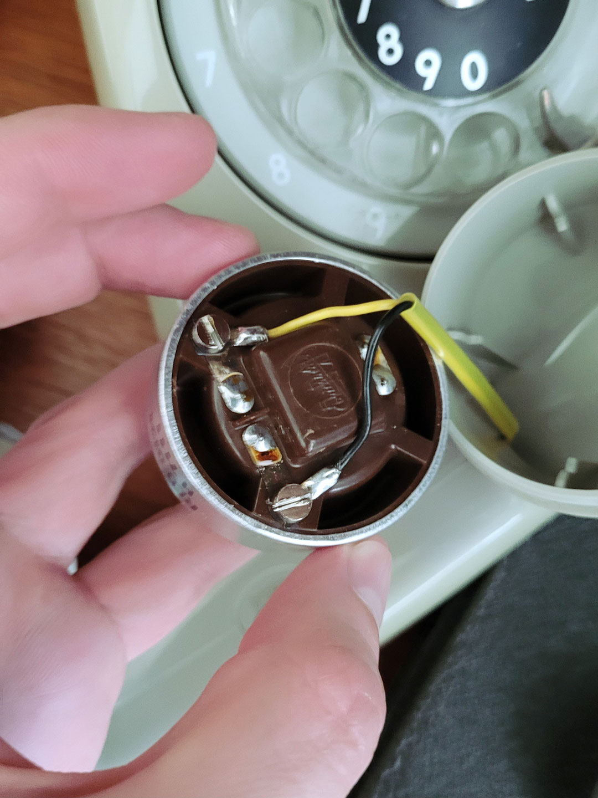
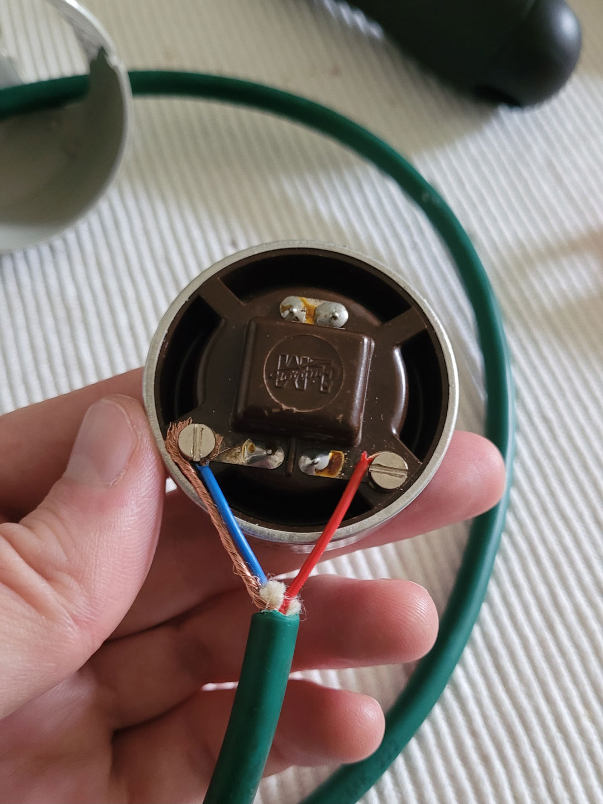

Lo-fi Mic
Turning an old phone headset into a lo-fi microphone
Earlier in 2025, I was inspired by the Munich-based band Hydra, who played a small gig at the underground
venue Krätzwerk in my hometown of Augsburg. During the show, the singer used an old telephone handset as a
microphone which immediately caught my attention. After their set we talked, and he showed me the mic,
explaining that it’s easy to build one yourself and that there are plenty of tutorials online.
So I did exactly that. I once again picked up an old rotary-dial telephone from a local recycling center
(Kierrätyskeskus) and turned it into something new. The twist with this project is that you don’t actually use
the handset’s built-in microphone—you use the speaker instead. It delivers a much more characteristic lo-fi,
vintage sound. Even better, the build turned out to be extremely simple, and I didn’t need to solder anything.
I just connected the pins of an XLR cable directly to the handset’s speaker component.

At first, I intentionally left the ground pin unconnected. Without the grounding, the mic picks up ambient
noise and creates a fuzzy, gritty vocal effect that works perfectly for garage or punk-rock. While this
sounded great at low volumes for things like podcast or audiobook recordings, it immediately caused heavy
feedback in a live band setting with a high-output PA. Reconnecting the ground pin cleaned up the signal—and
completely solved the issue.

Year
2025
Type
DIY Audio Project